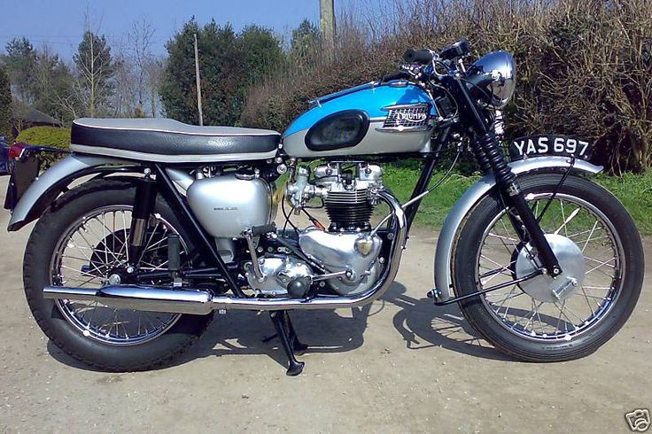
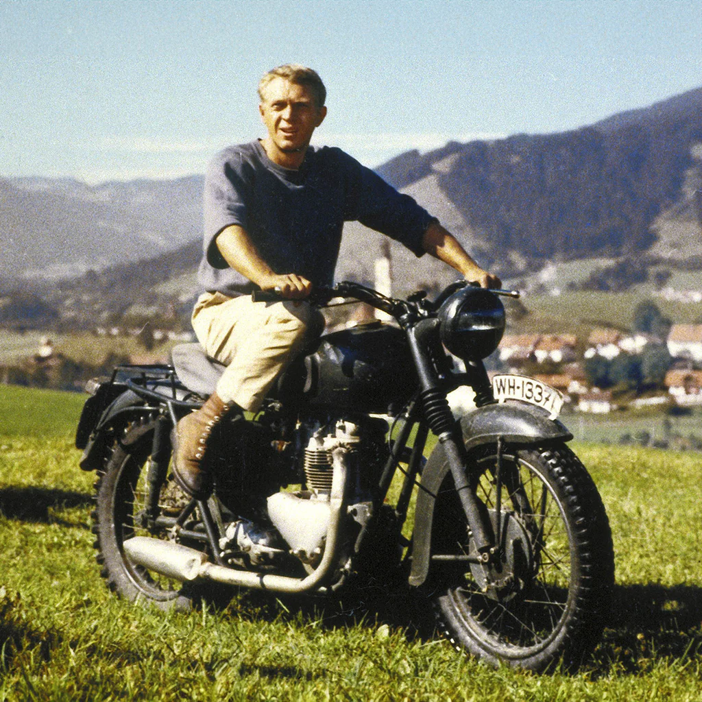
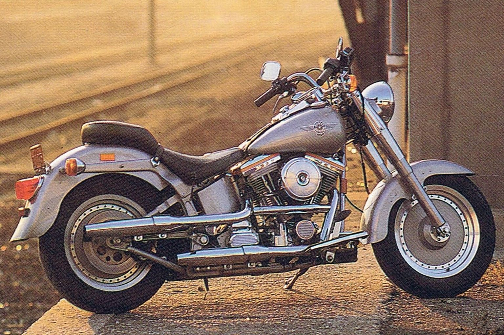
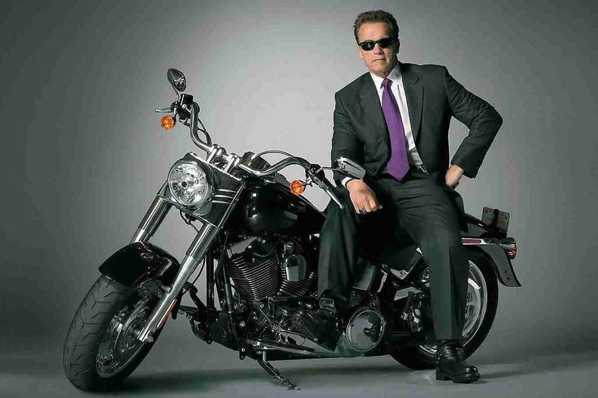
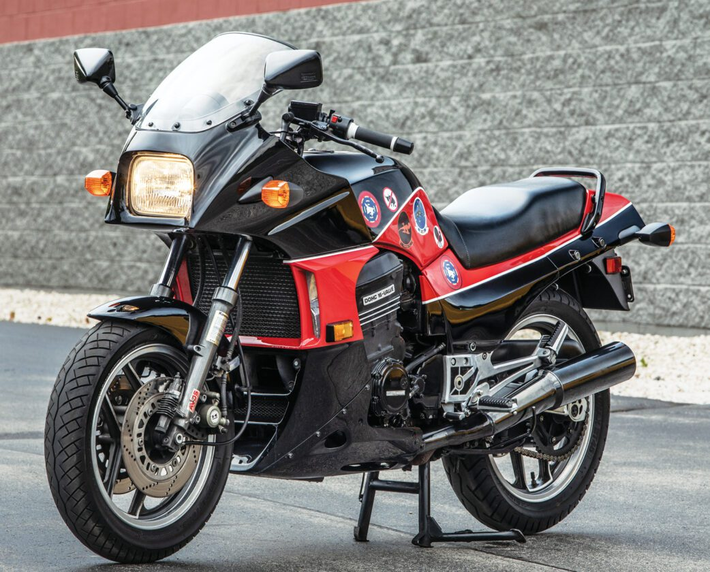
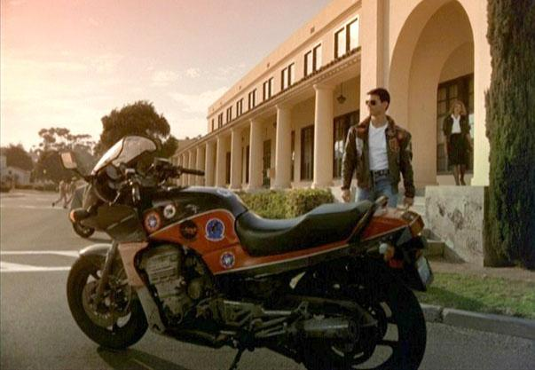
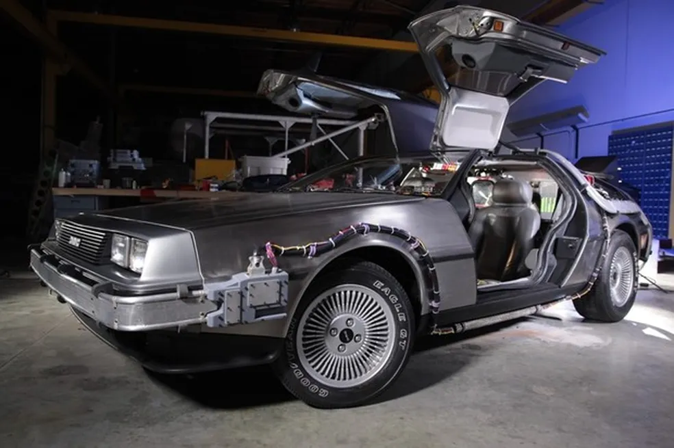
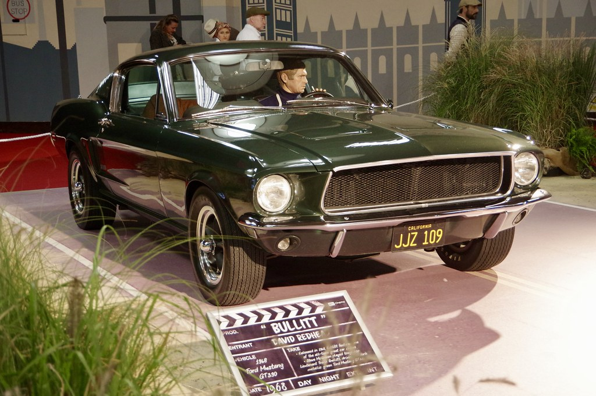
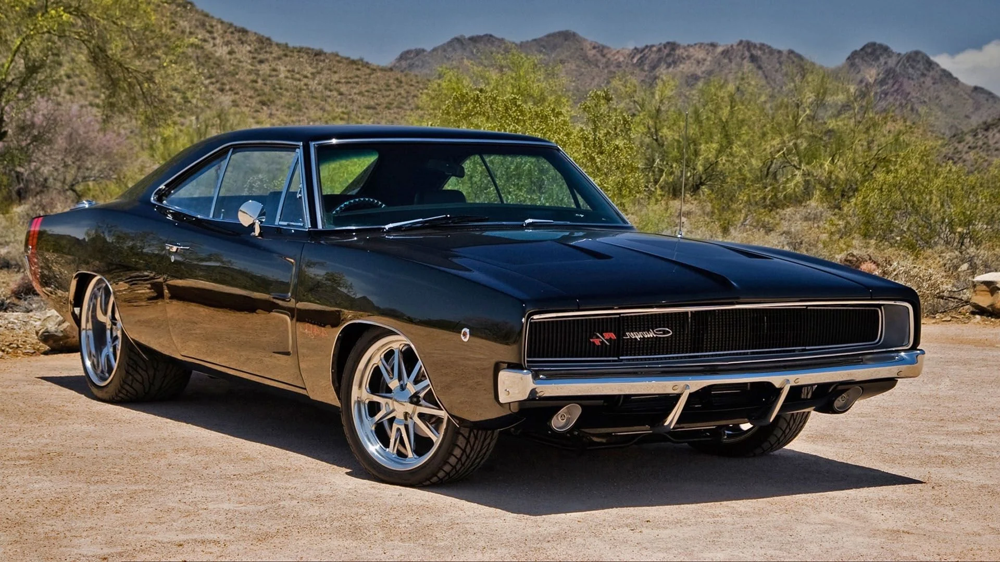
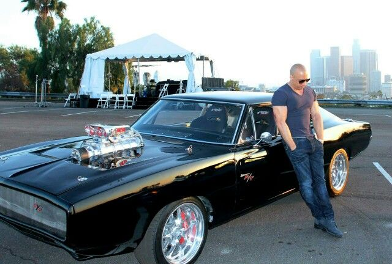

O cinema, através de sua capacidade de eternizar imagens, elevou veículos
clássicos ao status de ícones culturais. Carros e motos de
design atemporal e elegância singular conquistaram papéis de destaque em
produções cinematográficas que transcenderam gerações. Convidamos você
leitor a celebrar a rica história do cinema sobre rodas, revisitando os
modelos que se destacaram nas telas e se tornaram verdadeiras estrelas do
cinema.
Motos clássicas em filmes
Triumph Bonneville T120 (1961) – "The Great Escape" (1963)
Uma das cenas mais icônicas da história do cinema retrata Steve McQueen
pilotando uma Triumph Bonneville T120, caracterizada como motocicleta
alemã. A audaciosa fuga, marcada pelo célebre salto sobre a cerca de
arame farpado, consagrou este modelo como um símbolo memorável do cinema.

TRIUMPH BONNEVILLE T120 - 1961

1961 Triumph TR6 Trophy in The Great Escape (1963)
Harley-Davidson Fat Boy – "Exterminador do Futuro 2" (1991)
A imagem de Arnold Schwarzenegger conduzindo a Harley-Davidson Fat Boy
consolidou-se como um ícone do cinema de ação. A sequência da fuga pelos
canais de drenagem de Los Angeles, na qual o personagem T-800 pilota a
lendária motocicleta, figura entre os momentos mais memoráveis do gênero
de ficção científica.

HARLEY-DAVIDSON FAT BOY - 1990

FAT BOY DE ARNOLD SCHWARZENEGGER - 1991
Kawasaki GPZ900R – "Top Gun" (1986)
A interpretação de Maverick por Tom Cruise elevou a Kawasaki GPZ900R ao
status de símbolo cultural da década de 1980. As sequências de alta
velocidade em que o ator pilota a motocicleta ao lado de aeronaves F-14
consolidaram a representação icônica do veículo no cinema.

KAWASAKI GPZ900R - 1985

TOP GUN: KAWASAKI GPZ 900R NINJA
Carros clássicos em filmes
DeLorean DMC-12 – "De Volta para o Futuro" (1985)
O DMC-12, veículo que personifica a máquina do tempo na renomada franquia
de ficção científica, consolidou-se como um ícone do cinema. Seu design
futurista e as portas em forma de gaivota cativaram a imaginação de
diversas gerações, conferindo-lhe um lugar de destaque entre os veículos
mais emblemáticos da história do cinema.

DeLorean DMC-12 - 1981

DeLorean DMC-12 – De Volta para o Futuro (1985)
Ford Mustang GT 390 Fastback (1968) – "Bullitt" (1968)
A condução do Ford Mustang por Steve McQueen em uma das perseguições
automobilísticas mais intensas já registradas elevou o veículo ao status
de ícone cinematográfico. O som característico do motor V8, ecoando
pelas ruas de São Francisco, contribuiu para a notoriedade do automóvel,
equiparando-o à própria obra cinematográfica.

FORD MUSTANG GT 390 - BULLIT
Dodge Charger R/T (1970) – "Velozes e Furiosos" (2001)
O Dodge Charger preto, veículo icônico conduzido por Dominic Toretto,
consolidou-se como um emblema da franquia "Velozes e Furiosos".
O automóvel, com seu design imponente, motor exposto e estética
intimidante, transcendeu as telas e se tornou um símbolo da cultura dos
carros musculosos e da velocidade.

DODGE CHARGER RT - 1970

TORETTO COM SEU DODGE CHARGER RT
Em cada cena de perseguição, em cada close no painel, há um universo de
histórias que transcendem as telas. A presente seleção de cenas icônicas
destaca modelos que, em sua época, não apenas transportaram personagens,
mas também introduziram inovações e estabeleceram tendências que
permanecem relevantes na cultura pop.
Agradecemos a sua leitura e convidamos você a compartilhar este conteúdo
com seus contatos que apreciam carros e motos antigas, bem como os
clássicos do cinema que os eternizaram.